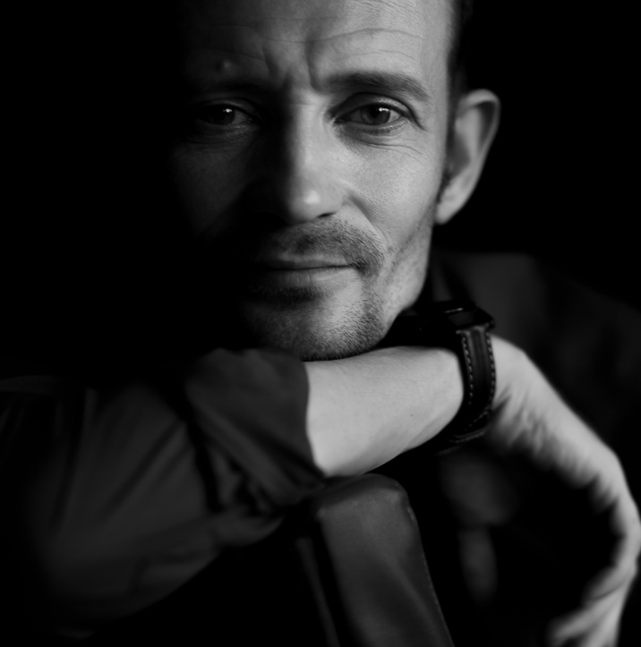

О нас
Два начала — одна сила
Мы не конкурируем. Мы дополняем друг друга.

Андрей Индыков
Джек по соционикеКоуч и НЛП-практик с 15+ летним стажем. Работаю через типологии, смыслы и структуру. Задаю ритм, границы, фреймворк.
Инженер по образованию, нейробиолог по призванию. Восстановил зрение, наладил сон, убрал психосоматику — и теперь уч этому других.
- 🧠 Структура и чёткие рамки
- ⚡ Еженедельные опросники и чек-листы
- 🎯 Типологии и стратегия
- 📊 Объективные данные и метрики

Юля Ляшенко
Бальзак по соционикеТелесный практик, внимательный астролог и КИ-специалист. Знаю, как хроническое напряжение прячется в мышцах, как дыхание становится ловушкой.
Создаю пространство тотальной безопасности. Здесь можно выдохнуть, легализовать усталость и получить безусловное принятие.
- 🌿 Телесные практики и дыхание
- ✨ Астрология как карта ритмов
- 🫁 Снятие зажимов без спортзала
- 💚 Безоценочное пространство